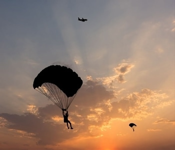
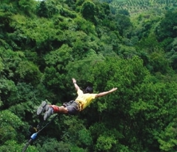
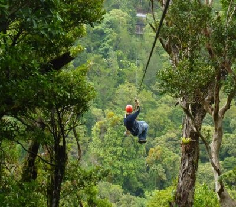
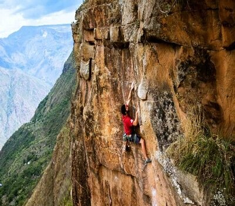

CURIOSIDADES
Conocer un lugar nuevo es una experiencia increíble para cualquier amante
de los viajes ya sea por romper la rutina, un corazón roto, estudiar, trabajar o
simplemente por ocio. Hay mil razones para viajar
bien dicen que un viaje es una enseñanza para toda la vida, y si eres de las
personas a las que constantemente les dicen que viajan mucho, pues
te tenemos unos datos súper curiosos sobre estas actividades
Viajar es como una medicina, estudios demuestran que al hacerlo estimulamos
nuestro cerebro, ya que aumenta la capacidad de resolución de problemas.
También se reduce el riesgo de padecer un infarto, combate la depresión,
se regula la presión arterial, aumenta el autoestima. Y lo más importante,
viajar te hace más feliz que comprar, ya que la satisfacción de tener varias
experiencias dura mucho más tiempo que tener algo material.
Viajar dentro de Colombia se esta convirtiendo en un faro para todos aquellos
viajeros que buscan una geografia diversa (playas, selvas, montaña, desierto y ciudad)
y hospitalidad por doquier.
Es un hecho: Colombia está renaciendo poco a poco y abriendole las puertas cada más a cualquier
persona que desee conocerla.
Conoce los datos mas sorprendentes de estas actividades extremas
Pasa el cursor sobre la actividad que te interese
BALSISMO

BALSISMO
Las embarcaciones más comunes que se utilizan son la balsa, la canoa o el kayak, que puede ser rígido o inflable.
Uso correcto del equipo básico personal: casco, chaleco y remo.
Río Suárez (Socorro, Santander) Clase III/V
Río Magdalena (San Agustín, Huila) Clase III/V
Rio Negro(Tobia,Cundinamarca)Clase lll/lll
Rios Barragán, Verde y La Vieja(Quindio)Clase ll!
PARACAIDISMO

PARACAIDISMO
El uso del paracaídas se remonta a China en el siglo
12. El sitio web de la Asociación de Paracaidismo de EEUU señala que en 1495
Leonardo Da Vinci diseñó uno piramidal, con estructura ¡de madera!.
El primer salto en la era moderna lo realizó el francés André-Jacques Garnerin en 1797,
desde un globo, a 3,200 pies -975 metros- sobre París.
PUENTING

PUENTING
Sabias que las personas en silla de ruedas también pueden hacer
puenting?, El puente mas alto esta en Sudáfrica, con una altura de
216 metros. Hubo un record en 2012, donde 135 personas se lanzaron
desde un puente en rusia.
TIROLESA

TIROLESA
El transporte de combustible por gravedad mediante cables y poleas
roscadas entre dos puntos fue creado por los trabajadores y residentes
que necesitaban para transportar rápidamente a las personas y
suministros a través de cañones, ríos y otras zonas intransitables
en las regiones remotas de China. ¿Se imaginan recorrer 3 kilómetros
de distancia a más de mil 600 metros de altura? Pues eso es lo que
mide la tirolesa más larga del mundo, el nuevo atractivo turístico
en los Emiratos Árabes Unidos (EAU).
ESCALADA

ESCALADA
El magnesio liquido para la escalada,
Se impregna muy bien en la manos y dura más que el magnesio en polvo.
De los factores más importantes para ESCALAR es la flexibilidad, mejora
es con un adecuado estiramiento.De los factores más importantes para ESCALAR
es la flexibilidad, mejora es con un adecuado estiramiento.
SENDERISMO

SENDERISMO
El origen del senderismo como actividad organizada la podemos datar
en el siglo XIX ya que antes de este siglo el caminar se asociada a un
medio de locomoción o a la pobreza más que a una actividad recreativa.
El sacerdote ingles llamado Thomas West promovió la actividad con la publicación de su guía de caminatas
por el Distrito de los Lagos en Inglaterra.